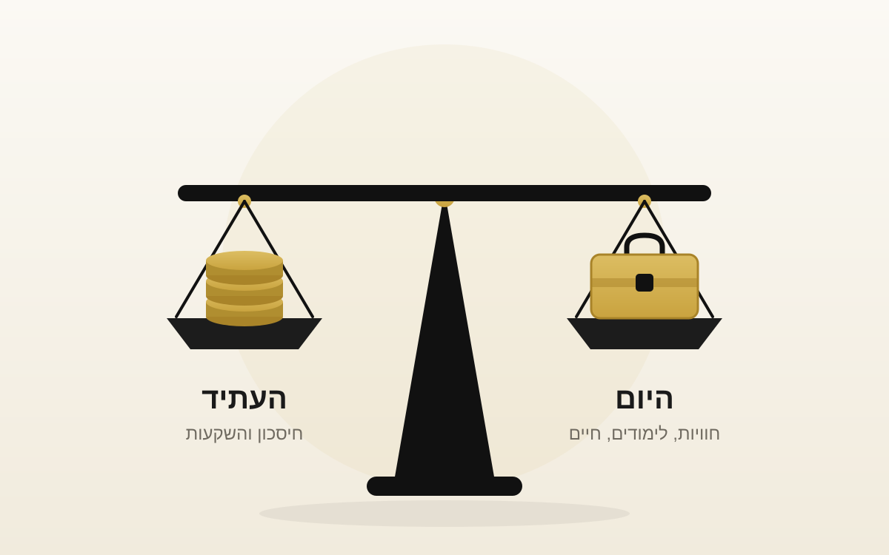

האם באמת צריך לחסוך כמה שיותר כשאנחנו צעירים?

יצא לי לראות לא מעט צעירים שלוקחים את כל ההון שלהם ושמים אותו בהשקעות, וכמעט לא משאירים כלום לשום דבר אחר. השאלה היא האם זה באמת נכון.
כשאנחנו צעירים לרוב יש לנו יכולת חיסכון גבוהה מאוד. אנחנו גרים אצל ההורים, ההוצאות נשארות נמוכות, וזה מאפשר לנו לחסוך המון. השאלה היא האם נכון לנצל את זה עד הסוף ולדחוף את הכל לעתיד.
דווקא מי שהתחיל להתעניין בכסף מוקדם נוטה למדוד את עצמו רק לפי כמה הצליח להשקיע, ולשכוח מדברים אחרים שחשובים לא פחות. קרן חירום, כסף להתפתחות אישית, כסף לחוויות ולכיף.
שלוש נקודות שכדאי לחשוב עליהן לפני שמחליטים כמה לחסוך
הכאן ועכשיו לא פחות חשוב מהעתיד
אם נקריב את הכאן ועכשיו בשביל העתיד, נפספס המון חוויות שרק הגיל הצעיר מאפשר לנו. בפועל אנחנו מקריבים איכות חיים בגיל צעיר לטובת איכות חיים בגיל מבוגר יותר.
בגיל צעיר כל שקל שווה יותר
ההכנסה שלנו בגיל צעיר תהיה בממוצע הנמוכה ביותר לאורך החיים, כי אנחנו בתחילת הדרך. לכן כל שקל הרבה יותר משמעותי לכאן או לכאן. אותו סכום שבגיל 25 הוא קורס, טיול או האפשרות לגור בדירה משלנו, בגיל 45 פשוט נבלע.
זה הגיל שאפשר לקחת בו סיכונים
בגיל צעיר אין לנו צורך רק לחסוך כמה שיותר. זה גיל שאפשר לקחת בו יותר סיכונים בקריירה, אפשר לטעות בו ולהתפתח, ולפעמים זה ידרוש מאיתנו להפסיד כסף או להכניס פחות לתקופה מסוימת.
אז מה כן
לדעתי הגישה הנכונה היא לשאוף לרמת חיים עקבית לאורך החיים, ולא לצמצם בשנים הצעירות רק כדי להצטיין בעתיד. כדי לעשות את זה אנחנו צריכים למצוא את האיזון בניהול הפיננסי שלנו, ולתכנן כמה אנחנו חוסכים לטווח הארוך, כמה לטווח הבינוני וכמה לטווח הקצר.
טווח קצר
הכסף שצריך להיות זמין ברגע שצריך אותו. קרן חירום, טיול, קורס, ציוד. הכסף הזה לא אמור לשבת בשוק ההון.
טווח בינוני
מטרות של כמה שנים קדימה. לימודים, רכב, הון עצמי ראשוני. רמת הסיכון כאן נגזרת מכמה זמן נשאר עד שנצטרך את הכסף.
טווח ארוך
הכסף שלא ניגע בו הרבה שנים. כאן הזמן והריבית דריבית עובדים בשבילנו, וכאן נמצא היתרון הכי גדול של מי שמתחיל צעיר.
6 נקודות לפני שמתחילים להשקיע ←אין כאן מספר קסם. יש מי שיפריש 15 אחוז ויש מי שיפריש 40, וזה תלוי בהכנסה, במטרות ובחיים עצמם. מה שחשוב זה שהחלוקה תהיה מודעת ולא אוטומטית, ושנוכל להתמיד בה לאורך זמן. תוכנית שאי אפשר לחיות איתה נשברת אחרי כמה חודשים.
זה מה שיגרום לנו להתמיד ולא ליפול בדרך.
מה אתם עושים בפועל, מפרישים כמה שאפשר או משאירים לעצמכם מרווח?
לא בטוחים איפה האיזון הנכון עבורכם?
כמה ללכת לטווח הארוך וכמה להשאיר לחיים עצמם. נבנה את החלוקה הזאת יחד
דברו איתי עכשיוהכתוב אינו מהווה ייעוץ פנסיוני, ייעוץ השקעות ואינו תחליף לייעוץ אישי. שיתוף ידע ודעה בלבד.